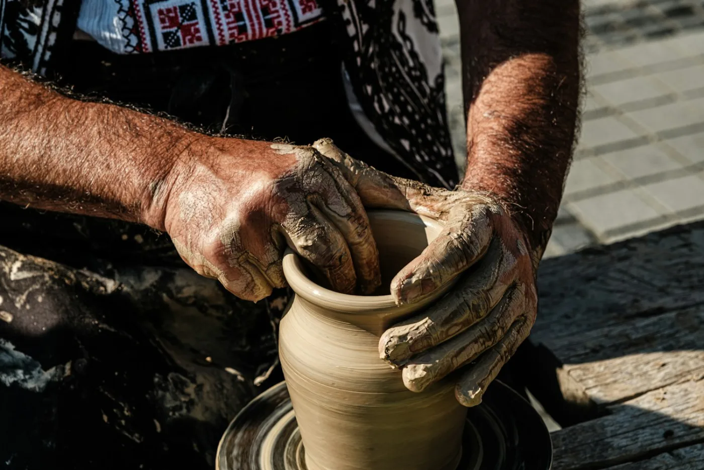
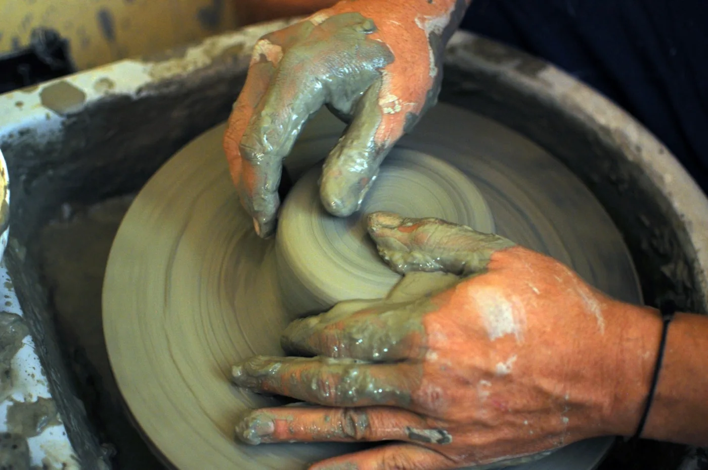
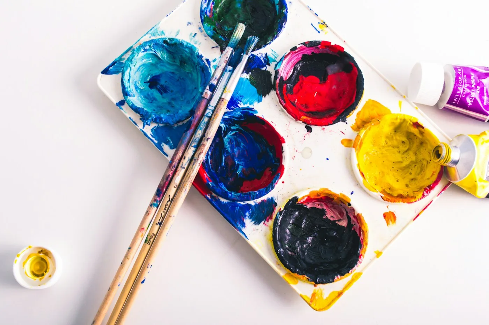
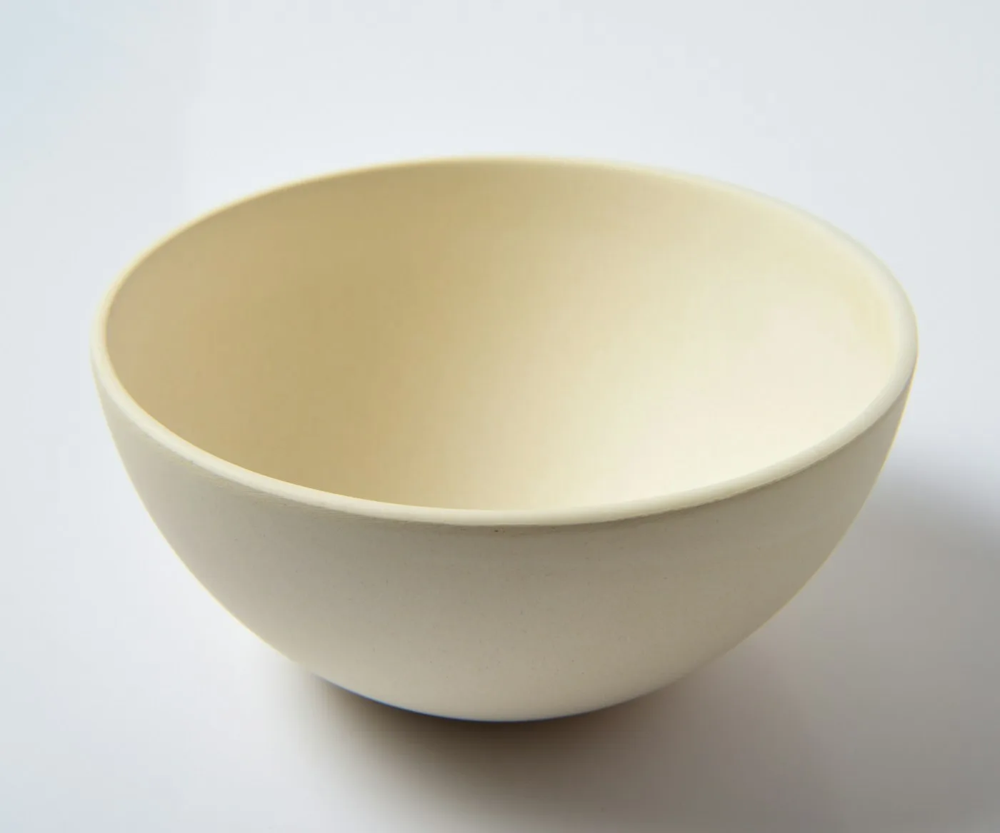

CLAY土と、てのひら
はじめての陶芸
土をこねて、形をつくる。少しゆがんだところも、自分だけの器の表情に。
MAKE ROOM FOR A LITTLE WONDER.
土にふれる。色を重ねる。
ふだん使わない手と頭を、ちょっと動かす。
ここは、大人が夢中に戻れるアトリエです。


つくる時間は、じぶんに戻る時間。
AN ATELIER FOR EVERYDAY CURIOSITY.A LITTLE ABOUT KOTO.
役に立つかどうかは、あとでいい。
うまくできるかどうかも、気にしなくていい。
「なんだか楽しそう」から始めたことが
暮らしの楽しみになるかもしれません。
そんな、まだ知らない自分に会う時間をつくります。
FIND YOUR SOMETHING
好きな素材から、気になる色から。
どのクラスも、はじめての方から。

CLAY土と、てのひら
土をこねて、形をつくる。少しゆがんだところも、自分だけの器の表情に。
色と、きもち
描くものが決まっていなくても大丈夫。色を混ぜるところから、楽しんでみましょう。
クラス・所要時間・税込料金は、サイト制作例として設定した架空の内容です。
FROM CLAY TO EVERYDAY.
くぼみも、ゆがみも、手のあとも。
自分でつくったものには
いつもと少し違う、愛着がわきます。

朝のスープに。A SMALL JOURNEY
陶芸クラスの工程を、写真でたどってみましょう。
写真はそれぞれの工程のイメージです。同じ器の制作記録ではありません。
湿り気や柔らかさを感じて
土の扱いに慣れる。
講師と相談しながら
つくりたい器に近づける。
乾燥と焼成を経て
暮らしの道具になる。
COME AS YOU ARE.
道具をそろえる前に、まず一度。
準備するものは、クラスごとにご案内します。
やってみたいことと、都合のよい時間から。ひとりでの参加も歓迎です。
講師と相談しながら進めます。思いどおりにならないところも、ものづくりのおもしろさです。
作品を暮らしの中に。陶芸作品は、窯で焼き上げてからお渡しします。
ちいさな質問、どうぞ。
もちろんです。道具の使い方から一緒に始めます。完成度よりも、素材にふれたり試したりする時間を大切にしています。
汚れてもよい服装でお越しください。気になる方はエプロンも。道具と材料はこちらで用意します。
アート作品は当日お持ち帰りいただけます。陶芸は乾燥と焼成が必要なため、仕上がってからのお渡しです。
LET’S MAKE A DAY OF IT.
気になるクラスを選んでみてください。
予約の流れを体験できます。
FIND YOUR CLASS / DEMO
予約画面のデモです。実際の予約・決済・外部送信は行いません。